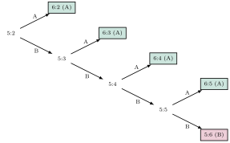

Aufgabe 2.8
Die Wahrscheinlichkeitsrechnung hat ihren Ursprung in der Untersuchung von Glücksspielen. Folgendes Problem wurde im Laufe zweier Jahrhunderte immer wieder betrachtet. Bis zu seiner ersten akzeptablen Lösung durch Pascal und Fermat (1654) vergingen 160 Jahre!
Zwei Spieler A und B werfen eine Münze. Jeder zahlt 50 Dukaten Einsatz. Bei Kopf gewinnt A ein Spiel, bei Zahl B. Gewinner ist, wer als erster sechs Spiele gewonnen hat. Infolge unvorhergesehener Umstände wird das Spiel jedoch beim Stande von 5 : 2 abgebrochen und nicht mehr aufgenommen.
Wie sind die 100 Dukaten Einsatz gerecht aufzuteilen?
- Welche Aufteilung würden Sie (mehr oder weniger aus dem Bauch heraus) empfehlen? (Erwartungshaltung aufbauen.)
- Angenommen, das Spiel hätte zu einem späteren Zeitpunkt eine Fortsetzung. Wie sähe dann ein Baumdiagramm für den weiteren Spielverlauf aus?
- Zu welcher Aufteilung würde Ihnen das Baumdiagramm raten? Ändert sich damit Ihre ursprüngliche Meinung?
- A braucht noch 1 Sieg zum Gewinn, B braucht noch 4 Siege
- Überlegen Sie: Nach wie vielen weiteren Spielen ist die Partie spätestens entschieden?
- Zeichnen Sie alle möglichen Spielverläufe bei Wiederaufnahme
- «Gerecht» bedeutet hier: proportional zur Gewinnwahrscheinlichkeit
Das Problem der gerechten Teilung - Ein Meilenstein der Wahrscheinlichkeitsrechnung
Teil (a): Intuitive Überlegungen
Verschiedene intuitive Ansätze: Nach Spielstand 5:2 $\rightarrow$ 71:29 Dukaten Nach fehlenden Siegen (A:1, B:4) $\rightarrow$ schwer interpretierbar «Fifty-fifty» $\rightarrow$ 50:50 Dukaten. Alle haben Schwächen!
Teil (b): Baumdiagramm nach Fermat
Schlüsselbeobachtung: Die Partie ist spätestens nach 4 weiteren Würfen entschieden! A gewinnt, wenn er mindestens einen der nächsten 4 Würfe gewinnt. B gewinnt nur, wenn er alle 4 gewinnt.

Fermats geniale Idee: Alle $2^4 = 16$ möglichen Ausgänge von 4 Würfen gleichgewichtet betrachten!
| Sequenz | Sieger | Sequenz | Sieger | ||||||
| A | A | A | A | A | B | A | A | A | A |
| A | A | A | B | A | B | A | A | B | A |
| A | A | B | A | A | B | A | B | A | A |
| A | A | B | B | A | B | A | B | B | A |
| A | B | A | A | A | B | B | A | A | A |
| A | B | A | B | A | B | B | A | B | A |
| A | B | B | A | A | B | B | B | A | A |
| A | B | B | B | A | B | B | B | B | B |
Ergebnis: 15 von 16 Fällen führen zum Sieg von A!
Teil (c): Gerechte Aufteilung
Nach Fermats Lösung: $P(A \text{ gewinnt}) = \frac{15}{16}$, $P(B \text{ gewinnt}) = \frac{1}{16}$
Aufteilung: A erhält $\frac{15}{16} \times 100 = 93.75$ Dukaten, B erhält $\frac{1}{16} \times 100 = 6.25$ Dukaten
Historische Lösungsversuche:
| Vorschlag | Aufteilung | Problem |
| Pacioli (1494) | 71:29 | Ignoriert zukünftige Chancen |
| Cardano (1539) | 91:9 | Falsche Gewichtung |
| Tartaglia (1556) | 75:25 | Willkürliche Formel |
| Fermat (1654) | 93.75:6.25 | Korrekt! |
Warum ist Fermats Lösung richtig?
- Berücksichtigt zukünftige Gewinnchancen, nicht nur aktuellen Stand
- Alle möglichen Spielverläufe gleichgewichtet
- Prinzip: Aufteilung proportional zur Gewinnwahrscheinlichkeit
Alternative Berechnung:
$$P(B \text{ gewinnt}) = P(\text{B gewinnt alle nächsten 4}) = \left(\frac{1}{2}\right)^4 = \frac{1}{16}$$
Diese Aufgabe markiert die Geburtsstunde der Wahrscheinlichkeitsrechnung als mathematische Disziplin!